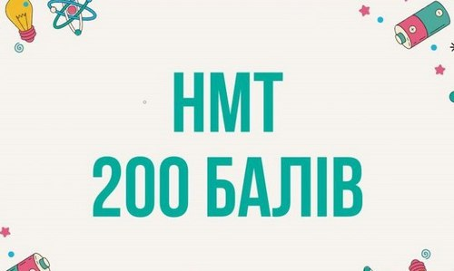

Ласкаво просимо на наш сайт! Тут ви знайдете всю необхідну інформацію про Національний мультипредметний тест (НМТ) 2024 року. Ми підготували для вас детальний гід, який допоможе підготуватися до цього важливого етапу у вашому житті.
Національний мультипредметний тест (НМТ) — це комплексне оцінювання знань учнів, яке включає питання з різних предметів. НМТ є важливим етапом для вступу до вищих навчальних закладів України.

НМТ 2024 складається з трьох основних блоків:
Українська мова та література: Завдання з граматики, орфографії, пунктуації та аналізу літературних творів.
Математика: Запитання з алгебри, геометрії та математичного аналізу.
Історія України: Тести на знання ключових подій, дат та персоналій української історії.
Корисні ресурси
Офіційний сайт УЦОЯО: Тут ви знайдете всю офіційну інформацію щодо НМТ, включаючи реєстрацію та розклад.
Онлайн-платформи для підготовки: Використовуйте сайти та додатки для підготовки до тестів, такі як [Unicorn School], [TURBO ZNO] тощо.
Відеоуроки та вебінари: Багато освітніх платформ пропонують безкоштовні матеріали для підготовки до НМТ.


Ми розуміємо, що підготовка до НМТ може бути складним процесом. Якщо у вас виникли питання або потрібна додаткова інформація, звертайтеся до наших консультантів через [+3805576321]. Ми завжди раді допомогти вам!